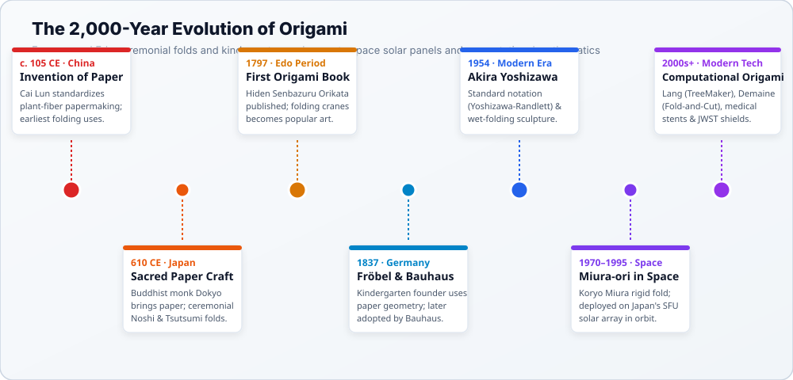
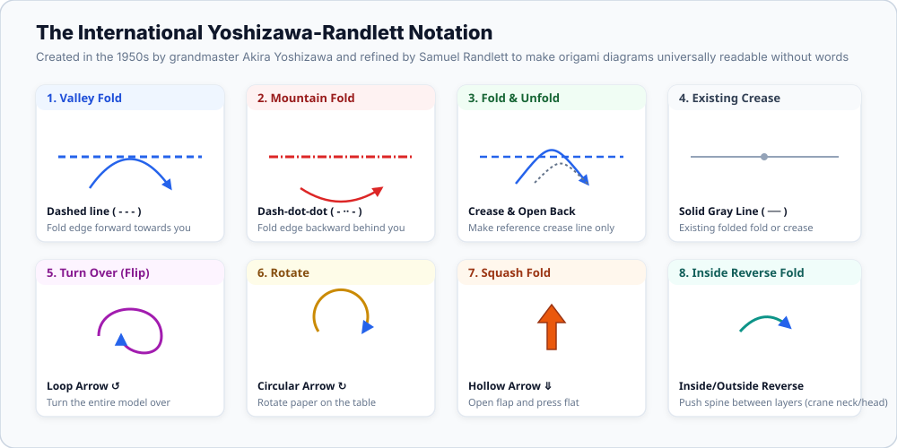
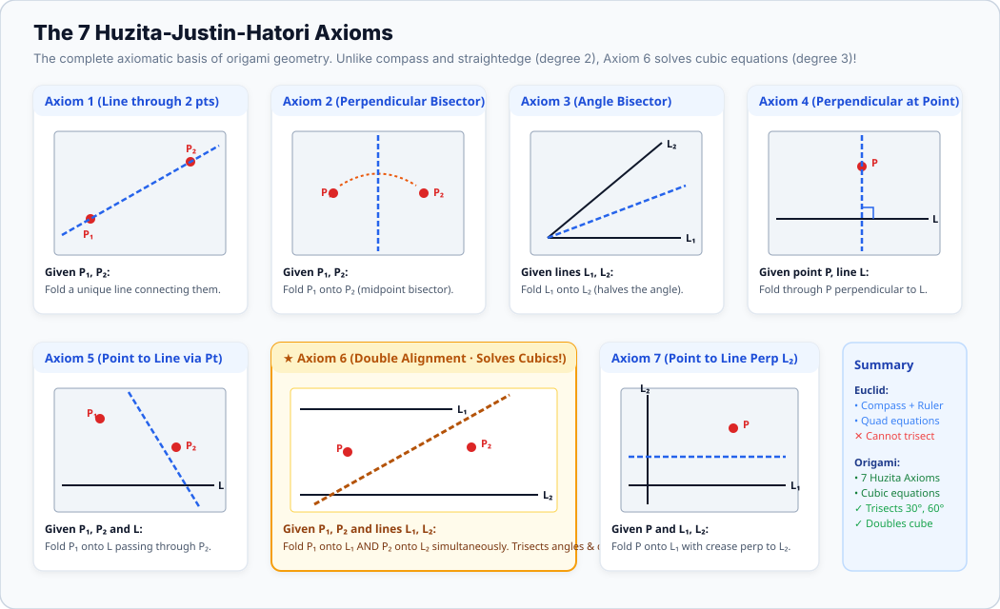
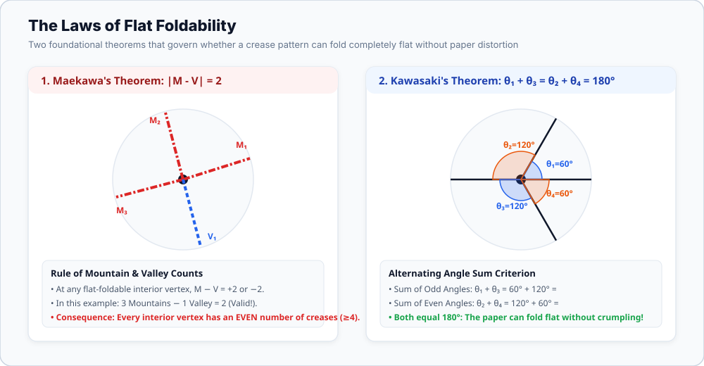
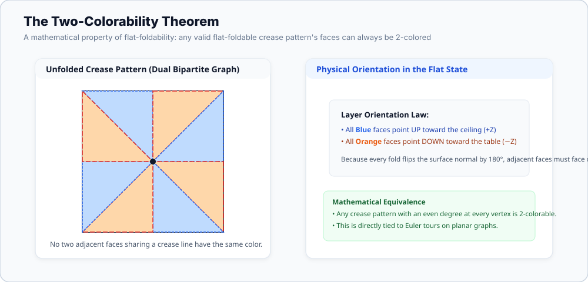
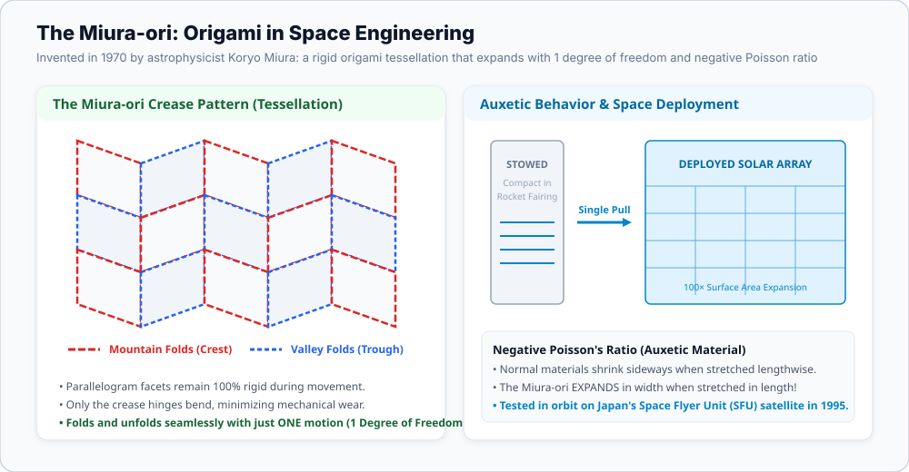

Art & Design · Mathematics · Paper Engineering
Origami: History, Mathematics & the Library of Creations
Origami is far more than a recreational craft. It is an exact geometric language that bridges ancient ceremonial art, Bauhaus spatial pedagogy, algebraic field theory, and modern aerospace engineering. While Greek compass-and-straightedge constructions stall at quadratic equations, paper folding solves cubic equations, trisects angles, and deploys solar sails in deep space.
Historical Evolution
From Ancient Paper Craft to Modern Science
The story of origami is intertwined with the history of papermaking itself. In 105 CE, imperial court official Cai Lun of China’s Han Dynasty standardized papermaking using macerated mulberry bark, hemp, old rags, and fishing nets. Paper was originally a precious luxury reserved for religious talismans and official archives.
In 610 CE, the Buddhist monk Dokyo introduced papermaking techniques to Japan. In the imperial court and among the samurai warrior class of the Heian (794–1185) and Muromachi (1336–1573) periods, folding was strictly ceremonial:
Noshi (熨斗)
Formal folded paper ornaments containing a strip of dried abalone, attached to gifts as a sacred token of good fortune, longevity, and high honor.
Tsutsumi (包み)
Ceremonial paper wrappers folded with geometric precision without scissors or glue to carry swords, poetry, certificates, and religious offerings.
During the peace and urban prosperity of the Edo Period (1603–1867), mass production made Japanese mulberry paper (washi) affordable to everyday citizens. Origami transitioned from an aristocratic ritual into a beloved recreational folk art. In 1797, Akisato Rito published Hiden Senbazuru Orikata ("The Secret to Folding One Thousand Cranes") — the world’s oldest surviving recreational origami book, proving that multiple interconnected cranes could be folded from a single sheet of uncut paper.

The Western Convergence: Kindergarten & the Bauhaus
In 1837, German educator Friedrich Fröbel founded the Kindergarten system. He introduced a series of twenty "Gifts" and "Occupations," explicitly including paper folding (Faltarbeit) to teach young children 2D and 3D geometric transformations. Decades later, at the legendary Bauhaus school in Germany, master instructor Josef Albers gave students whole sheets of paper and instructed them to transform the material into rigid load-bearing structures purely through folding — exploring material stresses without scissors, fasteners, or adhesives.
Standardized Visual Language
The Yoshizawa-Randlett Diagramming System
Before the mid-20th century, origami models were passed down primarily through oral demonstration or clumsy woodblock prints. The modern revolution began with grandmaster Akira Yoshizawa (1911–2005), who folded over 50,000 original models and pioneered wet-folding (dampening thick paper to form sculptural, organic curves).
In the 1950s, Yoshizawa collaborated with American folders Samuel Randlett and Robert Harbin to establish the universal diagramming notation used worldwide today. Like musical notation or architectural blueprints, the Yoshizawa-Randlett code communicates complex 3D transformations completely across linguistic barriers.

Mathematical Rigor
The Mathematics of Paper Folding: More Powerful Than Euclid
For more than two millennia, Euclidean geometry reigned supreme: all classical geometric constructions were limited to a compass and an unmarked straightedge. In the 19th century, Évariste Galois and Pierre Wantzel mathematically proved that compass and straightedge can only construct numbers formed by square roots (field extensions of degree $2^k$).
Consequently, the three classical problems of Greek antiquity were proven impossible with compass and straightedge:
- Trisecting an arbitrary angle (requires finding roots of $\cos(3\theta) = 4\cos^3(\theta) - 3\cos(\theta)$, a degree-3 cubic polynomial).
- Doubling the cube (requires constructing $\sqrt[3]{2}$, a degree-3 cubic equation).
- Squaring the circle (requires constructing transcendental $\pi$).
Origami breaks this 2,000-year barrier! Because a fold can simultaneously align multiple points and lines, paper folding can find the common tangent to two parabolas. This allows origami to construct roots of cubic equations (degree 3). Origami can easily trisect an arbitrary angle and double the cube!
The 7 Huzita-Justin-Hatori Axioms
Formulated independently by Jacques Justin (1986) and Humiaki Huzita (1991), and completed by Koshiro Hatori (2001), these 7 axioms define the complete mathematical universe of single-crease folding.
Axiom 6 is the crown jewel: "Given two points P₁, P₂ and two lines L₁, L₂, fold a line that places P₁ onto L₁ and P₂ onto L₂ simultaneously." This single operation solves general cubic equations, allowing paper to accomplish what Euclid’s tools could never achieve.

Flat Foldability: What Makes a Crease Pattern Possible?
When a finished origami model is flattened without cutting, stretching, or tearing the paper, its crease pattern must obey strict mathematical laws at every interior vertex:
Maekawa's Theorem
At any flat-foldable interior vertex, the difference between the number of mountain creases ($M$) and valley creases ($V$) is always two:
|M - V| = 2
Consequently, every flat-foldable interior vertex must have an even degree ($M + V = 4, 6, 8, \dots$), never an odd number of creases.
Kawasaki's Theorem
A single interior vertex is flat-foldable if and only if the alternating sum of angles around the vertex is zero, meaning odd and even angles each sum to 180°:
θ&sub1; + θ&sub3; = θ&sub2; + θ&sub4; = 180°
If this condition fails, the paper buckles or self-intersects in 3D space and cannot lay flat.

The Two-Colorability Theorem
Every flat-foldable crease pattern can have its faces 2-colored like a checkerboard! When the pattern is folded flat, all faces of Color A point upward toward the ceiling (+Z), and all faces of Color B point downward toward the table (−Z). This proves that the dual graph of any flat-foldable crease pattern is bipartite.

The Fold-and-Cut Theorem
Proven in 1998 by Erik Demaine, Martin Demaine, and Anna Lubiw: Any shape with straight edges — from a simple star to the complete English alphabet — can be cut out of a single sheet of paper with exactly ONE straight scissor cut, if the paper is folded correctly along its straight skeleton crease pattern.
Interactive Exploration
Interactive Mathematical Laboratories
Lab 1: Huzita Axiom Inspector & Angle Trisection
Inspect the seven geometric folding axioms and see how Axiom 6 solves the cubic angle trisection problem.
Live Angle Trisection Demonstration
Move the slider to select an angle $\theta$. Watch how origami Axiom 6 cuts it into three exact equal slices of $\theta/3$ without compass arcs:
Trisected Slice (θ/3) = 20.00°
Lab 2: Maekawa & Kawasaki Vertex Inspector
Drag the angle sliders and toggle mountain/valley fold assignments. Test whether your degree-4 vertex can fold flat without crumpling.
Lab 3: Miura-ori Space Solar Array Simulator
Drag the deployment slider to simulate the unfolding of a rigid origami space solar array with negative Poisson ratio.
Interactive Studio
The Library of Creations: Step-by-Step Folding Workbench
Select any model from the library below. Follow each illustrated step with clear instructions, pro tips, and mathematical insights. You can also toggle Crease Pattern (CP) View to inspect the flat crease blueprint of the model.
Start with a Square Sheet
Place your square paper flat on the table, colored side facing down if using single-sided kami paper.
High-Tech Applications
Origami in Aerospace, Medicine & Metamaterials
Today, the world’s leading engineering institutes (NASA JPL, MIT, Oxford, Tokyo University) actively hire computational origami researchers. Why? Because rockets have limited payload fairing diameters (typically 4 to 5 meters), yet spacecraft need giant antennas, solar shields, and solar collectors measuring tens of meters across.

James Webb Space Telescope
The JWST’s tennis-court-sized 5-layer Kapton sunshield could not fit inside the Ariane 5 rocket nose cone. NASA used origami accordion folding to pack it into a 4.5-meter fairing, deploying it smoothly in space 1 million miles from Earth.
Biomedical Heart Stents
Microscopic origami tubes engineered from biocompatible alloys are collapsed small enough to travel safely through blood vessels, then expand at the coronary artery to restore life-saving blood flow.
Automotive Crash Boxes
Electric vehicles use origami-patterned metal crash tubes. When impacted, the faceted folds buckle progressively along pre-programmed creases, absorbing 50% more kinetic impact energy without adding weight.
Knowledge Verification
Check Your Understanding & Lab Notes
1. Which Huzita-Hatori axiom allows origami to solve cubic equations, trisect angles, and double the cube?
2. According to Maekawa's Theorem, what is always true at any flat-foldable interior vertex?
3. What is the fundamental condition required by Kawasaki's Theorem for flat foldability?
4. Why is the Miura-ori tessellation called an "auxetic" material?
Lab Reflection & Engineering Field Notes
Record your observations from today's folding experiments. What surprised you about the connection between mathematical axioms and physical paper?